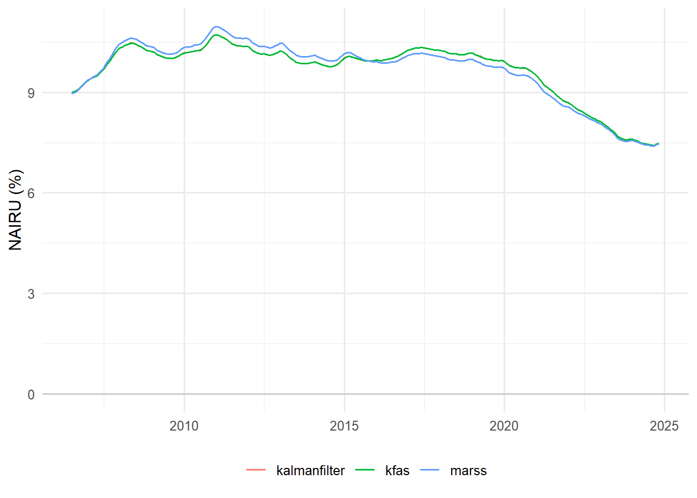

Kalman Filter Pt. 1: Core Services vs NAIRU in Brazil
kalman filter
brazil
nairu
inflation
time series
A from-scratch Kalman filter / MLE detour, then a three-package (MARSS, KFAS, kalmanfilter) replication of the BCB’s time-varying NAIRU Phillips curve for services inflation.
Published
July 9, 2026
Motivation
Brazil’s unemployment rate is at its lowest level in more than two decades (around 6.5–7%), which usually means an overheating labor market. Yet services inflation — arguably the part of the CPI most sensitive to labor costs — is running at about 5% a year, well below the 8–9% seen back in 2014, the last time unemployment was this low. Why isn’t tight labor supply showing up in services prices the way it used to?
That question is the subject of a short 2025 post on the Central Bank of Brazil’s (BCB) research blog, “O nível recente da inflação de serviços deveria causar surpresa?” by Thiago Trafane Oliveira Santos and Ricardo Sabbadini. Their answer hinges on a single latent variable: the NAIRU (non-accelerating inflation rate of unemployment) — the unemployment rate below which inflation tends to accelerate — which they let vary over time via a Kalman filter. If the NAIRU itself has fallen since 2018, a labor market that looks “hot” in raw unemployment terms may not be as inflationary as it looks.
This post is Pt. 1 of a two-part series. Here, I replicate the original BCB exercise — same sample, same Phillips curve, same two-stage estimation — in three different R packages (MARSS, KFAS, and kalmanfilter) side by side, as a portfolio piece on applied Kalman filtering. I don’t update the data or add fresh economic analysis; that’s Pt. 2.
Before touching the NAIRU model itself, it’s worth building the Kalman filter machinery generically — the state-space form, the predict/update recursions, and how maximum likelihood estimation falls out of them almost for free.
The Kalman filter, generically
At its core, a Kalman filter is a running weighted average: at every time step it has a guess about some quantity it can’t observe directly (here, the NAIRU), it sees a new, noisy clue about that quantity, and it blends the old guess with the new clue — weighting each by how much it trusts it. “State-space form” is just the bookkeeping that makes “how much to trust each one” precise and automatic.
State-space form
A linear-Gaussian state-space model has an observation equation linking what we see, \(y_t\), to a latent state \(\alpha_t\):
with \(\varepsilon_t\) and \(\eta_t\) mutually independent at all leads and lags. \(Z_t\), \(T_t\), \(H_t\), \(Q_t\) can depend on unknown parameters \(\theta\) (and, if the model has covariates, on time) — that’s exactly the machinery this post’s Phillips curve gets built on.
Predict / update recursions
Given \(\alpha_{t-1} \mid y_{1:t-1} \sim N(a_{t-1}, P_{t-1})\), the Kalman filter produces \(\alpha_t \mid y_{1:t} \sim N(a_t, P_t)\) in two steps.
Predict (propagate the state forward, before seeing \(y_t\)):
\(v_t\) is the prediction error — the gap between what was observed and what the model, given everything up to \(t-1\), expected — and \(F_t\) is its variance. Everything the filter needs from the data at each step is summarized by \((v_t, F_t)\).
MLE via the prediction-error decomposition
The joint density of \(y_1, \ldots, y_n\) factors as \(p(y_1)\prod_{t=2}^n p(y_t \mid y_{1:t-1})\), and because each conditional density is exactly the Gaussian implied by \((v_t, F_t)\) above, the log-likelihood collapses to a sum over the filter’s own by-products — the prediction-error decomposition:
This is the entire reason the Kalman filter is an estimation tool and not just a signal-extraction one: run the filter once for a candidate \(\theta\), read off \(\log L(\theta)\) for free, and hand it to a numerical optimizer. Every backend in this post — no matter how it likes to be specified — ultimately reduces to this same loop.
From generic theory to the BCB’s NAIRU model
The BCB’s Phillips curve for core services inflation is:
where \(\pi_t^{ss}\) is core services inflation, \(\pi_{t-1}^{12m}\) is the prior month’s 12-month headline IPCA (the inertial component), \(E_t(\pi^{LP})\) is the long-run Focus survey inflation expectation (the expectational component), \(u_t\) is the seasonally-adjusted unemployment rate, \(\text{IPPCV}_t\) is a supply-chain pressure index (zero outside Oct/2020–Sep/2022), and \(u_t^*\) — the NAIRU — is the one latent, time-varying piece.
\(\alpha\) (the average level gap between services-core and headline inflation) is calibrated, not estimated — the mean of \(\pi_t^{ss} -
\pi_t^{12m}\) over the pre-pandemic sample. Everything else is either a known regressor or one of \(\beta, \gamma, \theta, u_t^*\).
Mapping this onto the generic form: the observation equation is the Phillips curve rewritten with \(u_t^*\) isolated, and the state equation is a random walk on the NAIRU itself:
This is the “r-filter of order 1” of Araujo, Rodrigues Neto & Areosa (2003) — a Hodrick-Prescott-style generalization suited to series with no growth trend (like an unemployment rate), calibrated at \(\lambda=120\) (the monthly analogue of the usual HP \(\lambda=14{,}400\)).
NoteA reparametrization worth flagging
\(\gamma\) appears twice above — once as the loading on the latent state \(u_t^*\), once as the coefficient on the known regressor \(u_t\) — which none of this post’s three packages can estimate directly (no built-in way to tie a state loading to a regression coefficient elsewhere in the same model). The fix is a change of state: let \(s_t \equiv \sqrt{\lambda}\,
\gamma\, u_t^*\). The loading on \(s_t\) becomes the known constant\(1/\sqrt{\lambda}\), its innovation variance turns out to equal \(\text{Var}(\varepsilon_t)\)exactly (no \(\gamma\) left in the variance ratio — the two powers of \(\gamma\) cancel), and \(\gamma\) is left doing only one job: the coefficient on \(u_t\). Every backend below is built on this \(s_t\), with \(u_t^* = s_t / (\sqrt{\lambda}\,\gamma)\) recovered after fitting.
Two-stage estimation
To keep the pandemic from distorting the structural parameters, the original post estimates in two stages:
Stage 2 (full window, IPPCV included): fix\(\beta\) and \(\gamma\) at their stage-1 values, estimate \(\theta\) and the full NAIRU path.
Every backend below implements this through the same seam: fit_nairu(data, lambda, package, alpha, fixed) — fixed = NULL for stage 1, fixed = list(beta =, gamma =) for stage 2.
This post only runs \(\lambda=120\) (the original’s central calibration) and only the two-stage procedure. The original post also checks robustness at \(\lambda=60\) and \(\lambda=240\), and against a single-stage estimation (no pandemic-window split) — both come out qualitatively unchanged there, and aren’t reproduced here.
Data
ImportantDeviation from the original: sample starts Jul/2006, not Dec/2001
The original post’s sample runs Dec/2001–Nov/2024. This replication’s core services-core inflation series (\(\pi_t^{ss}\)) is only available from Jul/2006 onward in the data source used here — the underlying table simply doesn’t go back further. Everything else (unemployment, headline IPCA, Focus expectations, IPPCV) does have data back to 2001 or earlier. Per this project’s qualitative-replication bar, the fix is to use the longest available window and say so plainly rather than force a mismatch — so stage 1 here runs Jul/2006–Dec/2019 (≈162 obs, vs. the original’s 217), and stage 2 runs Jul/2006–Nov/2024.
The pipeline that assembles the raw series lives in raw_data.R and pulls from the author’s internal data infrastructure (datalake.utils) — read_vintage() against a proprietary datalake, and seas_dplyr() for X13 seasonal adjustment. It’s shown here verbatim, but not executed at render time, both as an honest record of where the numbers come from and as a visible nod to that infrastructure:
raw_data.R (not executed — pulls from a proprietary datalake)
Because read_vintage() and seas_dplyr() need internal datalake access and an X13 install, they won’t run for anyone who clones this site’s repo. raw_data.R writes its output to frozen_snapshot.csv, which is committed — that’s the file every code chunk below actually reads, so quarto render stays fully reproducible without depending on infra only I have access to.
Show code
library(dplyr)
Attaching package: 'dplyr'
The following objects are masked from 'package:stats':
filter, lag
The following objects are masked from 'package:base':
intersect, setdiff, setequal, union
Warning: package 'MARSS' was built under R version 4.6.1
Warning: package 'KFAS' was built under R version 4.6.1
Warning: package 'kalmanfilter' was built under R version 4.6.1
Show code
db <-read.csv("0001-kalman-filter-nairu-pt1/data/frozen_snapshot.csv")db$date <-as.Date(db$date)stage1_data <- db %>%filter(date >=as.Date("2006-07-01"), date <=as.Date("2019-12-01"))stage2_data <- db %>%filter(date >=as.Date("2006-07-01"), date <=as.Date("2024-11-01"))alpha <-calibrate_alpha(stage1_data)lambda <-120cat("alpha (calibrated):", round(alpha, 2), "p.p.\n")
\(\alpha\) comes out close to the original’s calibrated 1.1 p.p. — a useful independent check that the underlying series (before any Kalman filtering) are on the same footing as the original post’s.
Three packages, one model
Each package below fits the same two-stage model against the same frozen snapshot, through the shared fit_nairu() contract. What differs is how each package likes its state space handed to it — and, as a direct consequence, how much of the parameter vector each one’s own optimizer searches over.
MARSS: explicit matrices, one estimated element per cell
MARSS wants a fully-specified list of matrices (B, U, Q, Z, A, R, plus D/d for regression effects), where any cell can be a fixed number or a character label naming a free parameter — mix and match freely within a matrix. It’s the most literal translation of the algebra above onto code.
The one thing MARSS’s shorthand doesn’t support is tying a free parameter across two different top-level matrices — which is exactly what “\(Q\) equals \(R\)” (this post’s reparametrization) asks for. So fit_nairu_marss() profiles the shared variance in an outer 1-D search, and lets MARSS’s own estimator handle \(\beta,\gamma\) (or just \(\theta\), in stage 2) conditional on each candidate variance — the reason MARSS’s runtime in the comparison table below is visibly the largest of the three.
suppressMessages(library(MARSS))# MARSS wants a fully-specified list of matrices, where any cell is either a# fixed number or a character label naming a free parameter. It has no way# to tie a free parameter across two *different* top-level matrices, though# — which is exactly what this model's "Q equals R" reparametrization needs.# So the shared variance is profiled in an outer 1-D search, and MARSS's own# estimator handles beta/gamma (or just theta, in stage 2) conditional on# each candidate variance. That's also why this backend is the slowest of# the three in the runtime comparison below.fit_nairu_marss <-function(reg, lambda, fixed =NULL) { Zt <-matrix(1/sqrt(lambda)) y <-matrix(reg$y2, nrow =1)if (is.null(fixed)) { d <-t(cbind(reg$xtilde, -reg$u)) D_labels <-list("beta", "gamma") } else { d <-t(cbind(reg$xtilde, -reg$u, reg$ippcv)) D_labels <-list(fixed$beta, fixed$gamma, "theta") } D <-matrix(D_labels, nrow =1) fit_given_sigma2 <-function(sigma2) { mod <-list(B =matrix(1), U =matrix(0), Q =matrix(sigma2),Z = Zt, A =matrix(0), R =matrix(sigma2),D = D, d = d,x0 =matrix(0), tinitx =0, V0 =matrix(DIFFUSE_VAR) )MARSS(y, model = mod, silent =TRUE, control =list(maxit =1000)) } negloglik <-function(log_sigma2) { fit <-tryCatch(fit_given_sigma2(exp(log_sigma2)), error =function(e) NULL)if (is.null(fit) ||!is.finite(fit$logLik)) return(LOGLIK_PENALTY)-fit$logLik } t0 <-Sys.time() opt <-optimize(negloglik, interval =log(c(1e-3, 100)), tol =1e-4) fit <-fit_given_sigma2(exp(opt$minimum)) runtime <-as.numeric(Sys.time() - t0, units ="secs") cf <-coef(fit)$Dif (is.null(fixed)) { beta <- cf[1]; gamma <- cf[2]; theta <-NA_real_ } else { beta <- fixed$beta; gamma <- fixed$gamma; theta <- cf[1] } s_t <-as.numeric(MARSSkfss(fit)$xtT)assemble_result(beta, gamma, theta, reg, s_t, lambda, fit$logLik, runtime)}
KFAS: formulas, and regression coefficients concentrated out
KFAS builds models from a formula (SSMtrend(), SSMregression()), and its exact diffuse initialization lets regression coefficients (here, \(\beta,\gamma\) or \(\theta\)) be concentrated out of the likelihood entirely — treated as diffuse states with zero process variance, solved via generalized least squares inside the same filter pass that estimates the NAIRU. The only thing left for fitSSM()’s outer optimizer to search over is the single shared variance parameter — which is why KFAS’s runtime below is the smallest of the three, despite estimating exactly the same model.
The one manual step is overriding the trend component’s default loading (KFAS assumes 1) to this post’s known \(1/\sqrt{\lambda}\):
suppressMessages(library(KFAS))# KFAS builds models from a formula, and its exact diffuse initialization# lets regression coefficients (beta/gamma, or theta in stage 2) be# concentrated out of the likelihood entirely -- solved via GLS inside the# same filter pass that estimates the NAIRU, rather than searched over by# an outer optimizer. The only thing fitSSM()'s optimizer has to search is# the single shared variance parameter, which is why this backend is the# fastest of the three in the runtime comparison below.fit_nairu_kfas <-function(reg, lambda, fixed =NULL) {if (is.null(fixed)) { xtilde <- reg$xtilde; u <- reg$u mod <-SSModel(reg$y2 ~0+SSMregression(~0+ xtilde + u, Q =0) +SSMtrend(1, Q =list(matrix(NA))), H =matrix(NA)) } else { y3 <- reg$y2 - fixed$beta * reg$xtilde + fixed$gamma * reg$u ippcv <- reg$ippcv mod <-SSModel(y3 ~0+SSMregression(~0+ ippcv, Q =0) +SSMtrend(1, Q =list(matrix(NA))), H =matrix(NA)) }# KFAS's SSMtrend() assumes a loading of 1 by default; override it to this# model's known 1/sqrt(lambda) for every time point (Z is time-varying# here because the regression component makes the whole Z array 3-D). level_col <-dim(mod$Z)[2] mod$Z[1, level_col, ] <-1/sqrt(lambda) m <-dim(mod$Q)[1] updatefn <-function(pars, model) { sigma2 <-exp(pars[1]) model$H[1, 1, 1] <- sigma2 model$Q[m, m, 1] <- sigma2 # tie Q to H: this model's "Q equals R" model } t0 <-Sys.time() fit <-fitSSM(mod, inits =log(1), updatefn = updatefn, method ="BFGS") runtime <-as.numeric(Sys.time() - t0, units ="secs") smooth <-KFS(fit$model, filtering ="state", smoothing ="state") cf <-coef(smooth) loglik <--fit$optim.out$valueif (is.null(fixed)) { beta <-as.numeric(cf[nrow(cf), "xtilde"]) gamma <--as.numeric(cf[nrow(cf), "u"]) theta <-NA_real_ } else { beta <- fixed$beta; gamma <- fixed$gamma theta <-as.numeric(cf[nrow(cf), "ippcv"]) } s_t <-as.numeric(cf[, "level"])assemble_result(beta, gamma, theta, reg, s_t, lambda, loglik, runtime)}
kalmanfilter: bare matrices, roll your own optimizer
kalmanfilter is the most bare-bones of the three: one function, kalman_filter(ssm, yt), that runs the filter and hands back the log-likelihood — no built-in estimator at all. Every parameter, structural or variance, goes into a vector you optimize yourself (with optim(), maxLik, or anything else); every state-space matrix is built from that vector by hand, on every likelihood evaluation.
suppressMessages(library(kalmanfilter))# kalmanfilter is the most bare-bones of the three: one function,# kalman_filter(ssm, yt), that runs the filter and hands back the# log-likelihood -- no built-in estimator at all. Every parameter, structural# or variance, goes into a vector optimized by hand (with optim() here);# every state-space matrix is rebuilt from that vector on every likelihood# evaluation.fit_nairu_kalmanfilter <-function(reg, lambda, fixed =NULL) { n <-length(reg$y2) yt <-matrix(reg$y2, nrow =1) build_ssm <-function(par) {if (is.null(fixed)) { beta <- par[["beta"]]; gamma <- par[["gamma"]] ippcv_term <-0 } else { beta <- fixed$beta; gamma <- fixed$gamma ippcv_term <- par[["theta"]] * reg$ippcv } sigma2 <-exp(par[["logsigma2"]]) Am_t <- beta * reg$xtilde - gamma * reg$u + ippcv_termlist(Fm =array(1, dim =c(1, 1, n)),Dm =array(0, dim =c(1, 1, n)),Qm =array(sigma2, dim =c(1, 1, n)),Hm =array(1/sqrt(lambda), dim =c(1, 1, n)),Am =array(Am_t, dim =c(1, 1, n)),Rm =array(sigma2, dim =c(1, 1, n)), # Q equals R: this model's signal-to-noise tieB0 =matrix(0), P0 =matrix(DIFFUSE_VAR) ) } negloglik <-function(par) { f <-tryCatch(kalman_filter(build_ssm(par), yt), error =function(e) NULL)if (is.null(f) ||!is.finite(f$lnl)) return(LOGLIK_PENALTY)-f$lnl } start <-if (is.null(fixed)) {c(beta =0.3, gamma =0.6, logsigma2 =log(2)) } else {c(theta =1, logsigma2 =log(2)) } t0 <-Sys.time() opt <-optim(start, negloglik, method ="BFGS") runtime <-as.numeric(Sys.time() - t0, units ="secs")if (is.null(fixed)) { beta <- opt$par[["beta"]]; gamma <- opt$par[["gamma"]]; theta <-NA_real_ } else { beta <- fixed$beta; gamma <- fixed$gamma; theta <- opt$par[["theta"]] } filt <-kalman_filter(build_ssm(opt$par), yt, smooth =TRUE) s_t <-as.numeric(filt$B_tt)assemble_result(beta, gamma, theta, reg, s_t, lambda, -opt$value, runtime)}
β and γ land close to the original’s 0.30/0.67 in sign and order of magnitude (γ running a bit higher here, consistent with the shorter, more recent stage-1 window per the sample-start deviation above); θ lands very close to the original’s 1.32. The three packages agree with each other closely — MARSS’s nested profiling and KFAS/kalmanfilter’s joint optimization are different routes to (nearly) the same likelihood surface, which is itself a useful cross-check that none of the three has a sign or matrix-orientation bug. logLik isn’t directly comparable across packages here (each has its own convention for additive constants under diffuse initialization) — read each package’s value only relative to itself, e.g. across a λ-robustness sweep, not across the table’s rows.
Show code
nairu_long <-bind_rows(lapply(names(stage2_fits), function(pkg) { df <- stage2_fits[[pkg]]$nairu df$package <- pkg df}))ggplot(nairu_long, aes(date, nairu, color = package)) +geom_line(linewidth =0.7) +geom_hline(yintercept =0, color ="grey80") +labs(x =NULL, y ="NAIRU (%)", color =NULL) +theme_minimal(base_size =12) +theme(legend.position ="bottom")

Figure 1: Estimated NAIRU path, Jul/2006–Nov/2024, all three packages
The pattern matches the original post’s own description: the NAIRU sits persistently around 10% through 2018, then declines — landing close to 7.5% by Nov/2024 across all three packages, in the same ballpark as the original’s implied estimate (≈7.1–7.2%, back-calculated from its reported unemployment gap of −1.6 to −1.7 p.p. against a Nov/2024 unemployment rate of ≈5.4–5.5%).
Takeaway
The Kalman filter’s real trick isn’t signal extraction — it’s that the same predict/update recursion that tracks a latent NAIRU also hands you its log-likelihood for free, via the prediction-error decomposition. Once that clicks, “which R package” becomes a question of how much of the parameter vector you want to hand to that package’s own optimizer versus solve yourself — MARSS’s explicit matrices, KFAS’s diffuse-regression shortcut, and kalmanfilter’s roll-your-own filter are three different answers to that question, applied here to the same Phillips-curve NAIRU model as the BCB’s own.
Pt. 2 re-runs this same model on data extended to the latest available vintage, and turns to the economic question the original post was actually asking: with the NAIRU where it now sits, is Brazil’s tight labor market still surprising given today’s services inflation? That means confidence bands on the NAIRU path, an updated unemployment-gap read, and a look at whether the Oct/2020–Sep/2022 IPPCV window still makes sense to extend.
Alves, S. A. L., & Fasolo, A. M. (2015). Not Just Another Mixed Frequency Paper. BCB Working Paper 400. PDF — source of the retropolated-unemployment-rate methodology this post’s PNAD series follows.
Araujo, F., Rodrigues Neto, J. A., & Areosa, M. B. M. (2003). r-filters: a Hodrick-Prescott Filter Generalization. BCB Working Paper 69. — the “r-filter of order 1” state-space representation used above.
Ball, L., & Mankiw, N. G. (2002). The NAIRU in Theory and Practice. Journal of Economic Perspectives, 16(4), 115–136. — the sequential (non-Kalman) NAIRU approach that motivated the simultaneous MLE alternative used here.